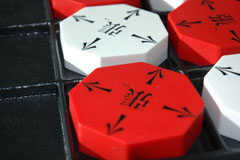

|

|

|

History
Chung-toi was created by W. Reginald Chung and was published by Design Science Toys. Chung took time off of his engineering career to create the game for his children. Based off the game tic-tac-toe, Chung-Toi was designed with the intent of being educational and challenging, but also simple to learn. The publisher, Design Science Toys, sadly went bankrupt as of 2005.
Game Play
The Pieces:
Each player has three pieces.
Rules:
To move: Chung-toi has two phases of moves. In the first phase, each player alternates turns placing three
pieces on the board. In the second phase, the pieces may be moved to different slots, rotated or both.
To win: To get three in a row, vertically, horizontally or diagonally.
The players begin by taking turns placing their game pieces on the board until all the pieces are played. If neither player succeeds in getting three pieces in a row then the players continue by taking turns moving their pieces to other open spaces on the board. A piece can be moved to any open space as long as an arrow on that piece points in the direction of the desired space. A player may also change the direction of the arrows while moving. Additionally, a piece can just rotate in place or “pass” (by spinning back to the original position). For a more detailed explanation of the rules, refer to Farzad Eskafi and Erwin Vedar's webpage.
Strategies: An easy strategy to follow is to make sure that there is an odd number of moves left. Generally, the player to go first will have the advantage.
Variants:
Misere: To force your opponent into getting three in a row.
Rotating Piece: Variation that says rotations are not allowed in place and if players are allowed to rotate upon landing.
Jumps: Players can select if they want to allow single-space jumps or double space jumps.
Trapping: Variation which allows the trapped player to lose.
Pictures:
|
|
|
|

|

|
 |
References
Design Science Toys. "Reginald Chung" Accessed on: 8 April 2006 through Google's Cache. 12 July 2005. <www.dstoys.com/content/Bios/ReginaldChung/>.